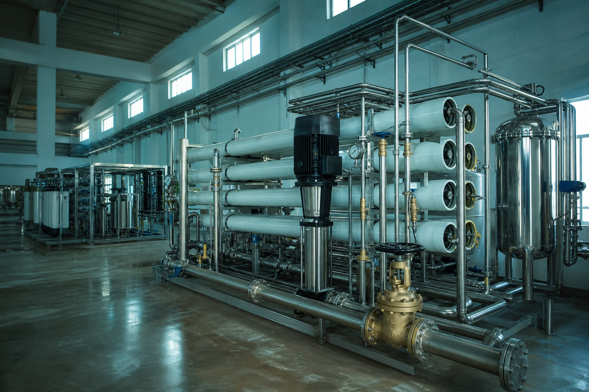

Consulting when you need clarity before capital spend
Independent-minded audits and upgrade roadmaps for societies, commercial kitchens, hospitals and industrial water systems across Ahmedabad and Gujarat — so you buy what the water actually needs.
When sales pitches conflict
Three vendors, three different plants — which one is right?
Society committees and facility managers in Ahmedabad often face competing RO, softener and STP quotes with no shared water data. DA Water consulting starts with measurements and end-use mapping, then ranks options by risk, opex and operability — including the option to repair what you already own.
- Evidence-first audits, not brochure comparisons
- Phased upgrade plans that match committee budgets
- Review of third-party proposals for gaps and oversell
- Practical Gujarat compliance and documentation guidance

Benefits
What consulting clients walk away with
Decision confidence
A clear preferred path with risks, cost bands and “do nothing yet” called out when that is the honest answer.
Less overselling
We flag capacity inflation, missing pre-treatment and AMC holes in vendor quotes before money leaves the society account.
Committee-ready notes
Plain-language findings secretaries can circulate — not jargon that stalls the next AGM.
Opex visibility
Salt, power, membrane and sludge realities for Ahmedabad feeds so CAPEX is not the only number discussed.
Compliance awareness
Guidance on documentation and treatment expectations for ETP/STP conversations without pretending to replace your lawyer or consultant of record.
Optional build-out
If you want one accountable implementer after the audit, we can design and install — or stay advisory if you prefer.
Features
Consulting engagements we commonly run
- Whole-plant audits: RO, softener, filtration, storage and distribution hygiene
- Society common-system health checks before AMC renewal
- Commercial kitchen and office drinking-water capacity reviews
- Industrial process-water and wastewater option screening
- Side-by-side evaluation of competing vendor proposals
- Phased CAPEX roadmaps (year 1 vs year 2–3 investments)
- Operator skill and SOP gap assessments
- Second-opinion visits when product water quality drifts
Why DA Water
Field engineers who have lived with the consequences
Advice from our Shela team is shaped by installations and AMC routes across west Ahmedabad — not slide decks alone. We know which “savings” fail in May heat, and we will say so before you sign.
Process
How a consulting engagement unfolds
Brief
Goals, constraints, existing reports and stakeholder map — committee, facility head or plant owner.
Investigate
Site audit, sampling as needed, review of logs, AMC history and vendor documents.
Recommend
Ranked options with CAPEX/OPEX notes, risks and a preferred sequence you can defend.
Support
Optional tender support, proposal review or handover to DA Water delivery if you choose to build.
FAQ